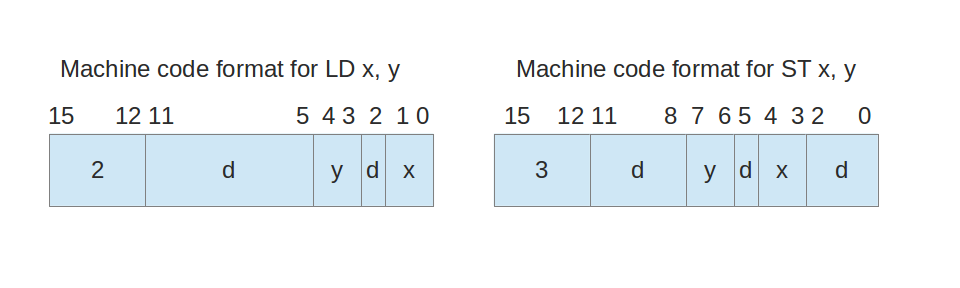
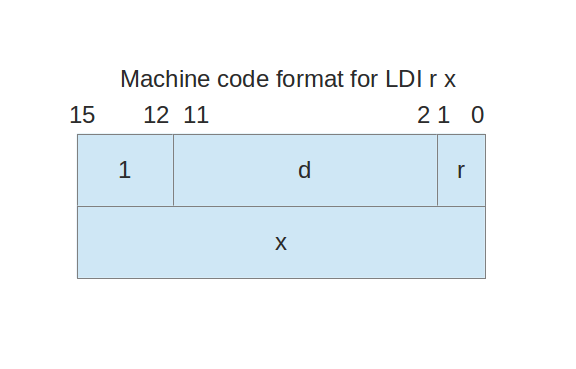
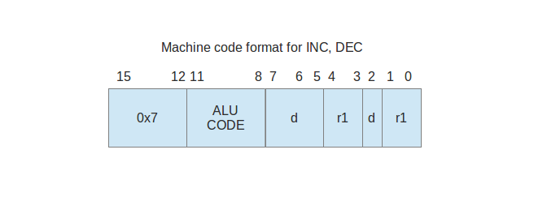
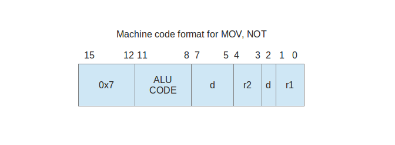
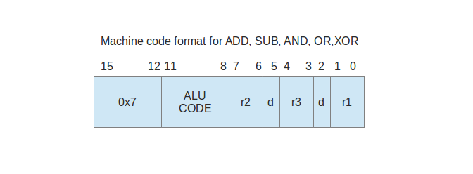

| Opcode (in hexadecimal) | Opcode Mnemonic | Instruction | |
|---|---|---|---|
| 1 | LDI | Load Immediate | |
| 2 | LD | load | |
| 3 | ST | store | |
| 4 | JZ | jump if zero | |
| 5 | JMP | Unconditional jump | |
| 6 | Unused | Unused | |
| 7 | ADD, SUB, AND, OR, NOT XOR, MOV, INC, DEC |
ALU operations |
LD x y ST x y
The machine code for these instructions are 16-bits long and has the following format: 
d in the figure means "don't care", as usual. In our examples we will always fill don't care locations with 0's (and never with 1's) for consistency, even though this does not matter in practice.
Example: To illustrate the passage from assembly language to machine code, we give some assembly language LD/ST instructions on the left and their machine code translations in hexadecimal on the right:
| Assembly | Machine code |
| LD 2 1 | 200A |
| LD 3 2 | 2013 |
| LD 2 2 | 2012 |
| ST 3 1 | 3058 |
| ST 1 3 | 30C8 |
| ST 3 2 | 3098 |
The assembly language format for the LDI instruction is
LDI r x
r denotes one of the general purpose registers, therefore it is a number between 0 and 3. x is the 16-bit immediate data that is to be loaded to this register. It can be in one of the three different formats:The machine code format of LDI instruction is as follows:

Example: Some assembly language LDI instructions are given on the left and their machine code translations in hexadecimal are provided on the right:
| Assembly | Machine code | |
| LDI 2 0x1A | 1002 001A | |
| LDI 3 0x2BA4 | 1003 2BA4 | |
| LDI 2 count | Not possible to translate into machine code till the assembler resolves the symbol "count" | |
| LDI 0 78 | 1000 004E | |
| LDI 3 -47 | 1003 FFD1 |
| ASSEMBLY | EXPLANATION | C EQUIVALENT |
| ADD r1 r2 r3 | Adds registers r2 and r3, puts the result into register r1 | r1=r2+r3 |
| SUB r1 r2 r3 | Subtracts register r3 from register r2, puts the result into register r1 | r1=r2-r3 |
| AND r1 r2 r3 | Ands registers r2 and r3, puts the result into register r1 | r1=r2&r3 |
| OR r1 r2 r3 | Or's registers r2 and r3, puts the result into register r1 | r1=r2|r3 |
| XOR r1 r2 r3 | Xor's registers r2 and r3, puts the result into register r1 | r1=r2^r3 |
| NOT r1 r2 | Negates the contents of registers r2, puts the result into register r1 | r1=!r2 |
| MOV r1 r2 | Transfers the contents of registers r2 into register r1 | r1=r2 |
| INC r1 | Increments the contents of registers r1 | r1++ |
| DEC r1 | Decrements the contents of registers r1 | r1-- |
| Instruction | ALU CODE |
| ADD | 0000 |
| SUB | 0001 |
| AND | 0010 |
| OR | 0011 |
| XOR | 0100 |
| NOT | 0101 |
| MOV | 0110 |
| INC | 0111 |
| DEC | 1000 |


